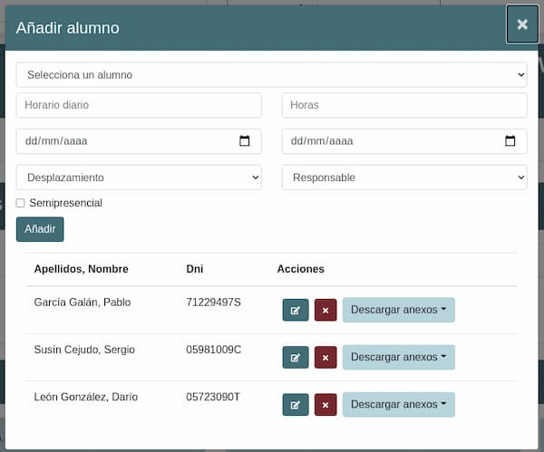
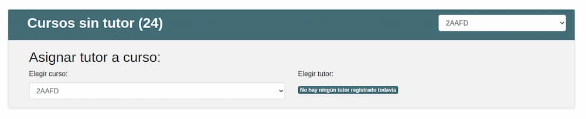

<main id="fondo" class="container-fluid min-vh-100">
  <div class="row">
    <!--**************************************MENU***************************************-->
    <div id="menu" class="col-12 col-lg-2 pr-0 bg-light border-right">
      <app-menu></app-menu>
    </div>
    <!--***********************************CONTENIDO***************************************-->
    <div id="contenido" class="col-12 col-lg-10 overflow-hidden mt-4">
      <!--Enlace botones-->
      <div class="mb-3">
        <button type="button" routerLink="/docMaria" class="btn btn-primary mx-1">María</button>
        <button type="button" routerLink="/docDaniel" class="btn btn-primary mx-1">Daniel</button>
        <button type="button" routerLink="/docLuis" class="btn btn-primary mx-1">Luis</button>
      </div>
      <div class="row">
        <div class="col-12 text-white2">
          <h1>Manual de usuario</h1>
          <p>Este manual le enseñara de forma fácil y sencilla como empezar a manejar la aplicación. Dicha aplicación le
            permitira añadir profesores, tutores, alumnos, empresas y crear las prácticas de los alumnos en la empresa
            selecciona. Además podrá generar y descargar los anexos necesarios para todo el proceso.</p>
        </div>
      </div>

      <div id="accordion" >
        <div class="card">
          <div class="card-header tema-dark" id="headingOne">
            <h5 class="mb-0">
              <button class="btn btn-link collapsed" data-toggle="collapse" data-target="#collapseOne"
                aria-expanded="true" aria-controls="collapseOne">
                Cursos
              </button>
            </h5>
          </div>
          <div id="collapseOne" class="collapse" aria-labelledby="headingOne" data-parent="#accordion">
            <div class="card-body tema-dark text-white2">
              <p>
                En esta pantalla tendrá el control de los cursos que desee modificar, en la parte superior podrá elegir
                trabajar con un curso existen o bien crear uno nuevo:
              </p>
              
              <p class="border-top pt-2">Una vez tenga seleccionado un curso, en la siguiente tarjeta, podrá modificar
                el curso, añadir alumnos o incluso eliminar el curso seleccioando</p>
              
              <p class="border-top pt-2">En la siguiente tarjeta tendrá el control para añadir las empresas que hagan
                prácticas en dicho curso, para ello debera introducirlas previamente en la zona de empresas, como
                veremos mas adelante.</p>
              <p>Una vez añadida la empresa podra tanto eliminarla como añadir alumnos a esas practicas, cuando elimina
                una empresa de un curso, tambien elimina los alumnos asociados a dicha empresa, tenga esto en cuenta a
                la hora de eliminar</p>
              
              <p class="border-top pt-2">Cuando seleccione añadir alumno, vera que se abre una nueva ventana donde podra
                añadir alumnos a dicha empresa con las caracteristica de cada practica, dentro de la misma venta tendra
                las opciones de modifica y eliminar al alumno.</p>
              
            </div>
          </div>
        </div>

        <div class="card">
          <div class="card-header tema-dark" id="headingTwo">
            <h5 class="mb-0">
              <button class="btn btn-link collapsed" data-toggle="collapse" data-target="#collapseTwo"
                aria-expanded="false" aria-controls="collapseTwo">
                Empresas
              </button>
            </h5>
          </div>
          <div id="collapseTwo" class="collapse" aria-labelledby="headingTwo" data-parent="#accordion">
            <div class="card-body tema-dark text-white2">
              <p>Desde esta pantalla podra crear, ver/modificar empresas, ademas de poder eliminarlas</p>
              
              <p class="border-top pt-2">Si entra en ver empresa, le llevara a una nueva ventana donde podrá modificar
                dicha empresa</p>
              
            </div>
          </div>
        </div>

        <div class="card">
          <div class="card-header tema-dark" id="headingThree">
            <h5 class="mb-0">
              <button class="btn btn-link collapsed" data-toggle="collapse" data-target="#collapseThree"
                aria-expanded="false" aria-controls="collapseThree">
                Centro
              </button>
            </h5>
          </div>
          <div id="collapseThree" class="collapse" aria-labelledby="headingThree" data-parent="#accordion">
            <div class="card-body tema-dark text-white2">
              <p>En esta pantalla tendra acceso a modificar los datos del centro, datos que luego apareceran en los
                anexos seguún sea necesario</p>
              
            </div>
          </div>
        </div>

        <div class="card">
          <div class="card-header tema-dark" id="headingTFour">
            <h5 class="mb-0">
              <button class="btn btn-link collapsed" data-toggle="collapse" data-target="#collapseFour"
                aria-expanded="false" aria-controls="collapseFour">
                Admin
              </button>
            </h5>
          </div>
          <div id="collapseFour" class="collapse" aria-labelledby="headingFour" data-parent="#accordion">
            <div class="card-body tema-dark text-white2">
              <p>Desde esta ventana tendra acceso a introducir alumnos, cursos, profesores de forma masiva desde un
                archivo csv. Esta todo organizado en pesatañas para que puede acceder de una forma rápida y sencilla</p>
              
              <p class="border-top pt-2">También puede asignar los tutores desde esta petaña</p>
              
            </div>
          </div>
        </div>

      </div>
    </div>
  </div>
</main>
